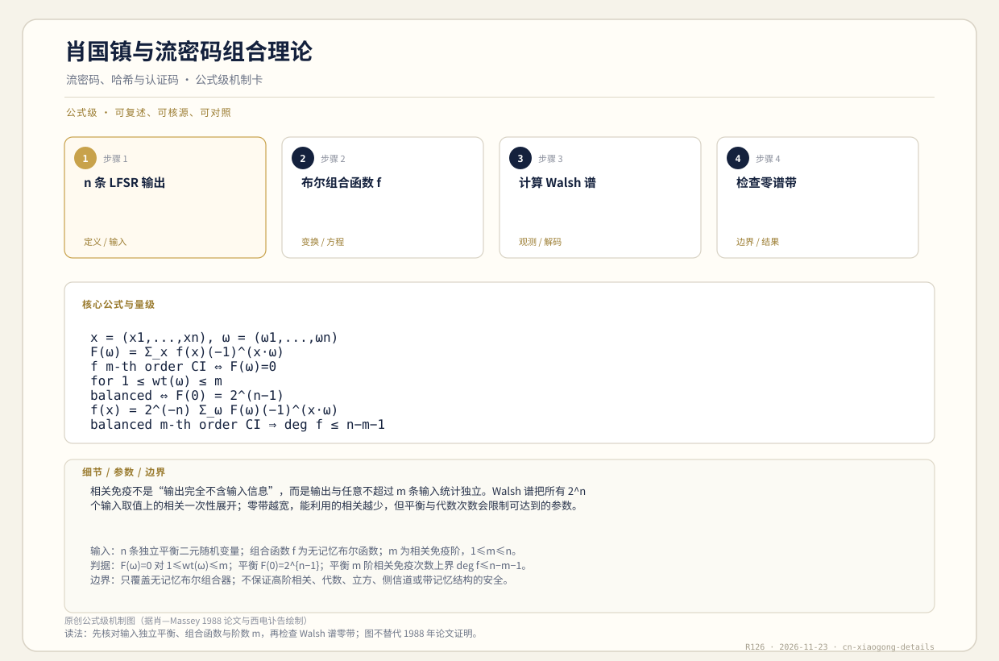

原理与机制
中国密码史：肖国镇与流密码组合理论（Xiao Guozhen and Stream Cipher Composition）。### 组合器模型
流密码常用 n 条 LFSR 的输出 x=(x1,...,xn) 经无记忆布尔函数 f 组合成密钥流 z=f(x)。相关攻击关心 z 是否泄露某条或某组 LFSR 的信息；f 的 m 阶相关免疫定义为 z 与任意不超过 m 条输入统计独立。### Walsh 谱判据
对 f 做 Walsh 变换 F(ω)=Σ_x f(x)(−1)^(x·ω)。肖国镇与 Massey 证明：f 是 m 阶相关免疫，当且仅当 F(ω)=0 对所有 1≤wt(ω)≤m 成立；z 平衡当且仅当 F(0)=2^{n−1}。这把“统计独立”从概率定义变成可计算的谱零点检查。零带越宽，输出与少量输入的相关越弱；但平衡 m 阶相关免疫函数的代数次数受 deg f≤n−m−1 约束。设计时不能只看 m，还要看平衡、非线性度与具体组合器结构。

为什么重要
相关免疫是流密码组合函数的第一道统计防线；没有它，一条 LFSR 的相关性就能把密钥流攻击降成低维搜索。肖—Massey 定理把这条防线变成 Walsh 谱的零带，使设计者能在布尔函数阶段精确筛选，而不必靠实验猜测。
应用与实例
1.写出组合函数 f 的真值表或代数正规形。2.对每个 ω 计算 F(ω)=Σ_x f(x)(−1)^(x·ω)。3.检查 1≤wt(ω)≤m 的谱值是否全为 0；再检查 F(0)=2^{n−1} 是否平衡。4.把 m、n、谱零带和代数次数一起记录；平衡 m 阶相关免疫函数的代数次数受 deg f≤n−m−1 约束。5.需要实现时，用标准布尔函数库复算，不把谱值手算当成唯一验证。### 不能怎么用
不能把相关免疫当成全部安全；不能只看 m 的大小而忽略平衡、非线性度、代数免疫和具体组合器结构；不能把 F(ω)=0 的零带误写成所有 ω 都为零。
边界与攻击面
1.阶数越界：定理只覆盖 1≤wt(ω)≤m；更高阶的谱值可以非零，可能被高阶相关或快速相关攻击利用。2.平衡与次数权衡：平衡 m 阶相关免疫函数的代数次数受限；追求高 m 可能降低非线性度。3.组合器结构：定理针对无记忆布尔组合器；带记忆、过滤/驱动结构或非线性部件不适用。4.实现偏差：布尔函数实现若引入相关故障或错误，谱判据不能保证实际输出。5.攻击模型变化：相关免疫不等于抗代数、抗立方、抗侧信道或抗量子攻击。
历史与背景
肖国镇 1934 年 9 月生于吉林四平，1956 年参加工作，1960 年起在西安军事电信工程学院/西北电讯工程学院/西安电子科技大学任教，2016 年 11 月 12 日逝世，享年 82 岁。西安电子科技大学讣告称，他提出组合函数统计独立性概念与相关免疫性的频谱特征化定理，国际通称肖—Massey 定理；论文发表于 IEEE Transactions on Information Theory 1988 年第 34 卷第 3 期。
时间线、证据与争议
登记年份以来源账本为准；背景是OTP 与流密码中此前技术、机构与冲突的累积；过程只写有来源支持的参与者、地点与行动；结果写它改变了哪些标准、机器、课程或政策；争议写二手叙述与一手材料的差距。来源包括：Wikipedia search entry for 肖国镇与流密码组合理论；《密码简史：穿越远古 展望未来》（杨义先、钮心忻，电子工业出版社，2020，ISBN 9787121398711）。
不要把“发生过”写成“已证明”，也不要把事件标题扩写成机制结论；没有日期的节点只作逻辑位置。
逐步示例与核验
事件时间线模型
背景 → 过程 → 结果 → 争议。背景写此前技术/制度；过程写可核参与者与时间；结果写后续标准、机器、课程或政策；争议写二手叙述与一手材料的差距。
参考出处
- Wikipedia search entry for 肖国镇与流密码组合理论. https://zh.wikipedia.org/w/index.php?search=%E8%82%96%E5%9B%BD%E9%95%87%E4%B8%8E%E6%B5%81%E5%AF%86%E7%A0%81%E7%BB%84%E5%90%88%E7%90%86%E8%AE%BA
- 《密码简史：穿越远古 展望未来》（杨义先、钮心忻，电子工业出版社，2020，ISBN 9787121398711）. https://book.cppinfo.cn/Encyclopedias/home/index?id=3730464